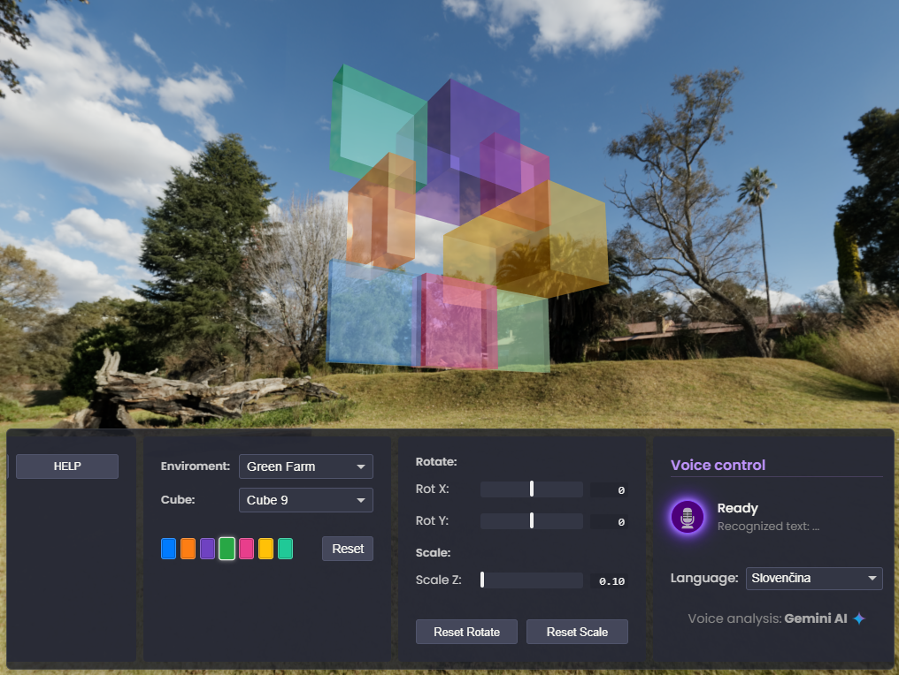

Vesmír
Ticho, v ktorom sa ukrýva celý príbeh existencie, a predsa je iba prázdnym rámcom pre všetko, čo v ňom existuje.
Projekty

CUBE
3D interaktívny model s hlasovým ovládaním..
(Zatiaľ žiadne mobilné aplikácie)
Kontakt
...